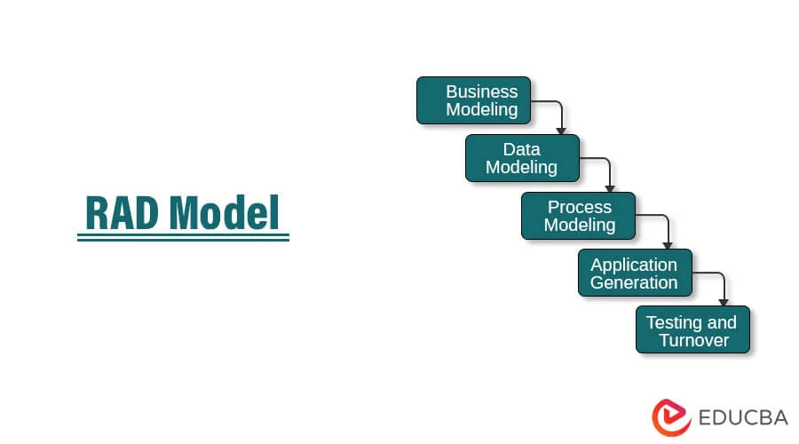

I am Dorothy, as of now I am an improved and skilled tech lady. Equipped with new skills in coding and widened my thinking scope.
Programs learnt.
Frontend web development
How to create a github account.
Create folder and html files in visual code studio.
Using html to create a website, tables and forms.
Adding different styling; adding links, adding images and using css to style.
Different types of elements block, inline and empty elements.
Frontend web development
Different commands in git and how to initialize a repository, commit the changes and push your work to github.
Git cloning; making a copy of your work.
Different types of data; string, boolean, float, numbers and arrays.
How to use kotlin, create a project and work with a kotlin file.
Kotlin commands and types of operators that can be used in kotlin such as addition, multiplication, subtraction, modulus and division.
Using of a+=b , increment ++ and decrement --.
Quality assurance
Quality assurance involves testing and ensuring the quality of a project is met.
Stages taken in quality assurance involves;requirements, development, testing, deployment and maintenance.
Quality assurance is done as before or during the project as a precaution while quality control is done after the project has been deployed.
Different models used; waterfall model, Rapid Application Development model, V-model, iteration model and also agile model.

Data software architecture
The relationship between input, memory, CPU and output.
Instructions are entered in the computer as input then the memory temporarily stores the data while its being processed at the CPU, after the data is processed its sent back to the output from the memory where it was temporarily held.
Random Access Memory is a non-volatile memory that holds data temporarily and displays the output to the user while Read-Only Memory is volatile memory that stores data permanently.
Navigating your journey
How to confidently introduce yourself.
Navigating through hard times.
Collaboration amongst ourselves.
Backend
Python is used in web development.
Different commands in python, check version and open python from terminal using python3 -V
Different types of data; integers, strings, boolean and float.
Operators in python including +, -, *, /,<, >, <=,>=
In operators like <= or >= it displays as either true or false.
Ux research(user research)
Defining a problem , understanding users needs, researching on the gaps in the market and solving the problem.
Ideation and prototyping the project used to solve the problem.
Looking for the pain points and the areas that need to be improved in the project.
UI/UX design
Focusing on the user interface.
Being creative on different designs.
Different shapes , colours and designs.
How to design a leso, drawing motifs and a shield.
Be keen and creative on designing, spotting differences and following the rules when designing.
Rules; symmetrical or non-symmetrical and following patterns.
Product management
A product manager oversees to ensure what he or she ordered is what he or she gets.
Overlooking the product released solves the problem in the market.
Checks on every step of the product and manages whats done during the project.
.jpg)